1. L'integrale definito come area
L'integrale serve ad accumulare: somma tanti piccoli contributi. Geometricamente questa somma è l'area sotto la curva, fra due estremi a e b.
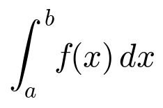
Nel simbolo: il segno di integrale è una "S" che sta per somma; a e b sono gli estremi; f(x) è l'altezza della curva; dx è una larghezza piccolissima. L'area si ottiene sommando tanti rettangolini di base dx e altezza f(x).
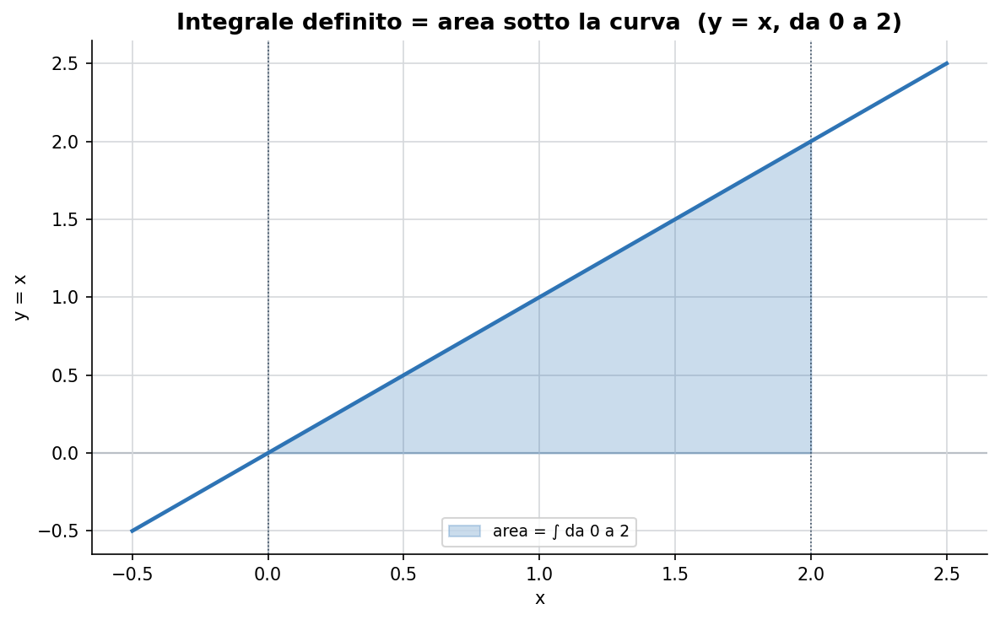
Più i rettangoli si assottigliano (base dx sempre più piccola), più la loro somma coincide con l'area vera: questo è ciò che fa il simbolo di integrale.
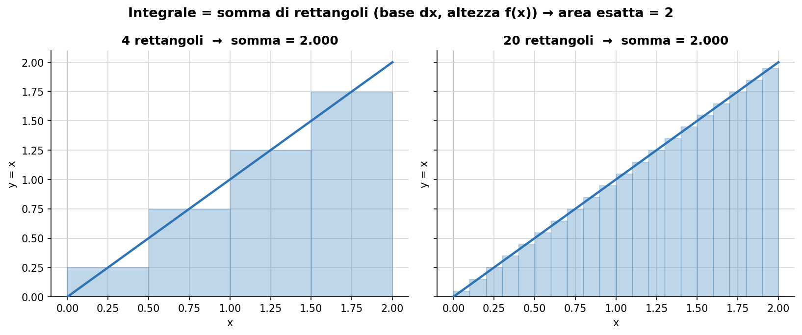
Attenzione: se la curva va sotto l'asse x, quel tratto conta come area negativa (area con segno).
2. Teorema fondamentale e primitive
Una primitiva F di f è una funzione che, derivata, ridà f:
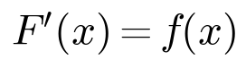
Il teorema fondamentale del calcolo dice che, per calcolare l'area, basta trovare una primitiva e fare la differenza agli estremi:
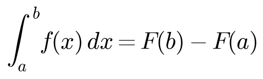
Quindi derivare e integrare sono operazioni inverse: per integrare si cerca "chi, derivato, dà f". Quando cerchiamo la primitiva in generale scriviamo l'integrale indefinito, con la costante +C:
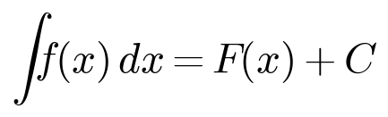
Il +C c'è perché la derivata di una costante è zero: infinite funzioni che differiscono per una costante hanno la stessa derivata. Il legame si vede bene osservando che f è la pendenza della sua primitiva F: dove f è positiva F sale, dove f è negativa F scende, dove f vale zero F ha un estremo.
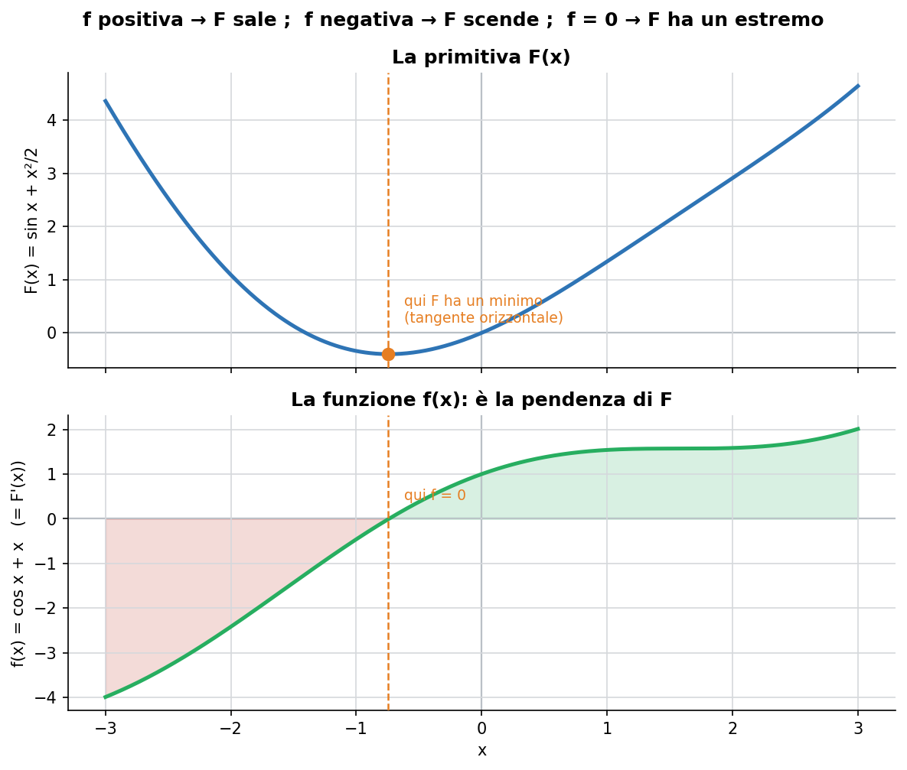
3. Primitive immediate e linearità
La regola più usata è quella delle potenze: l'esponente sale di uno e si divide per il nuovo esponente.
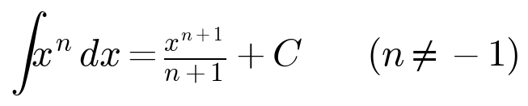
Vale anche la linearità: l'integrale di una somma è la somma degli integrali e le costanti escono fuori.
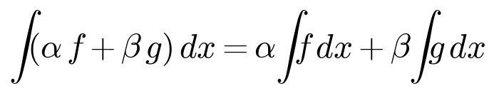
Tavola delle primitive immediate
Sono le derivate elementari lette al contrario, da sapere a memoria:
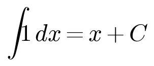
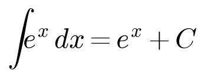
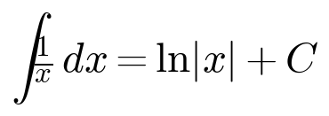
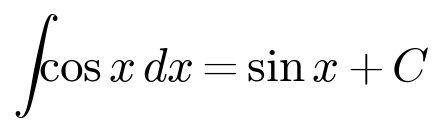
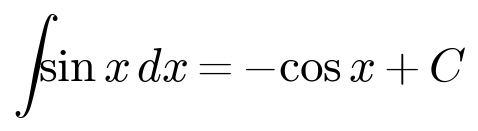
Due sono "dispettose": la primitiva del seno è meno coseno (occhio al segno) e 1/x dà il logaritmo (è il caso escluso dalla regola delle potenze, con n = -1). Questo schema riassume derivate e integrali delle funzioni trigonometriche come giri in versi opposti sullo stesso cerchio.
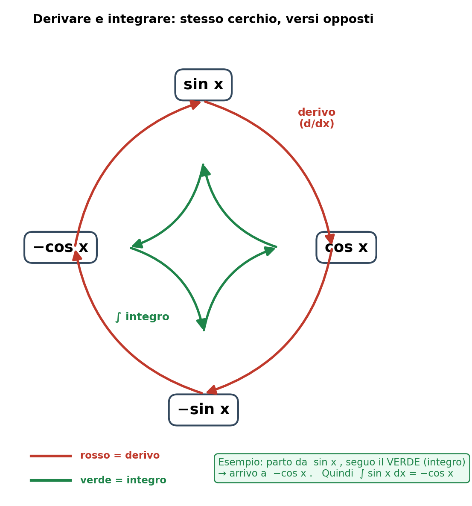
4. Integrazione per sostituzione
È la regola della catena letta al contrario. Si usa quando dentro l'integrale c'è una funzione composta con accanto la derivata del suo "interno". Si pone t uguale all'interno, si calcola dt e si riscrive tutto in t. Esempio: nell'integrale di 2x·cos(x²) l'interno è x², e la sua derivata 2x è già presente.
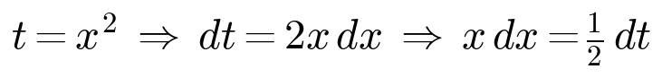
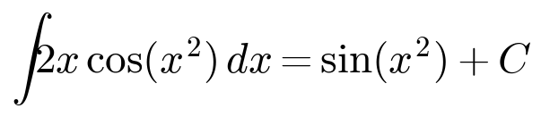
Spesso la derivata dell'interno è presente a meno di una costante: la si aggiusta portando fuori il numero mancante (per esempio x dx = ½ dt). Alla fine si risostituisce sempre l'interno al posto di t: nel risultato non deve restare la t.
5. Integrazione per parti
Serve per i prodotti di due funzioni diverse (per esempio un polinomio per un esponenziale), dove la sostituzione non funziona. Nasce dalla regola del prodotto delle derivate, riscritta:
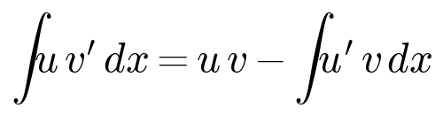
Uno dei due fattori si deriva (u → u'), l'altro si integra (v' → v). Si sceglie come u il fattore che, derivandolo, si semplifica: un polinomio è perfetto, perché derivandolo abbassa il grado fino a sparire.
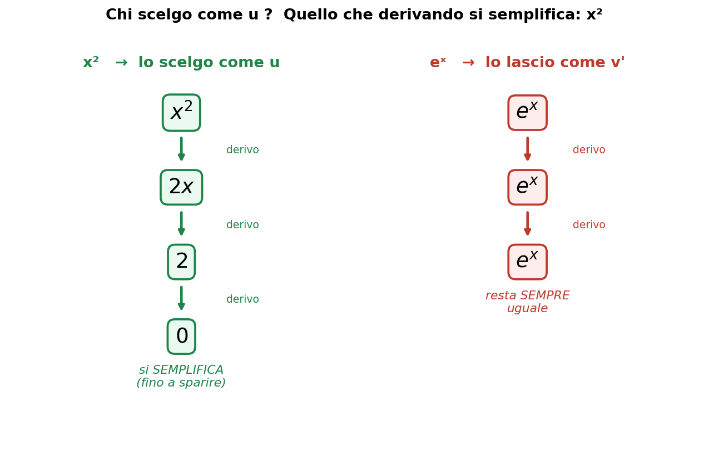
Esempio a un giro:
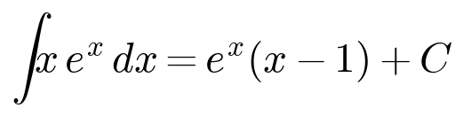
Se il polinomio ha grado 2 servono due giri di per parti (uno per ogni abbassamento di grado): si applica la formula, resta un integrale ancora con un polinomio, e si riapplica la stessa formula.
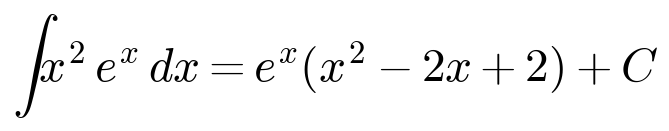
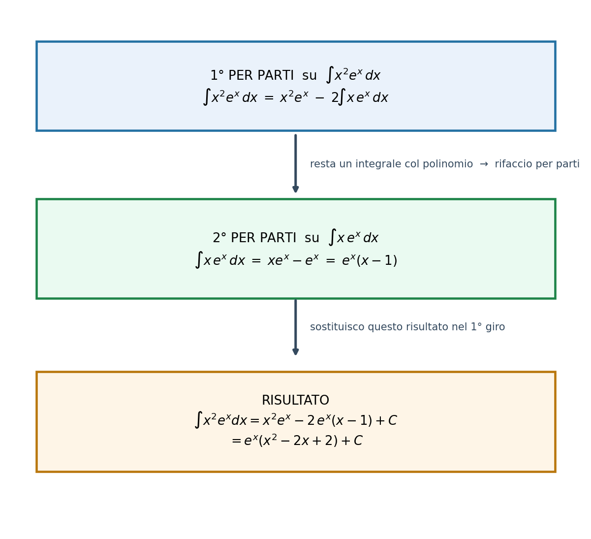
6. Funzioni razionali (fratti semplici)
Una funzione razionale è una frazione con un polinomio sopra e uno sotto. L'idea è spezzare la frazione complicata nella somma di frazioni più semplici, che si integrano come logaritmi. I tre passi sono: fattorizzo il denominatore, spezzo in fratti semplici, integro ogni pezzo.
Passo 1 — fattorizzare il denominatore
Se è una differenza di quadrati si usa la regola seguente (attenzione: a e b sono le quantità che, al quadrato, danno i due termini):
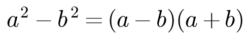
Gli zeri del denominatore diventano i fattori: per esempio x² - 1 vale zero in x = 1 e x = -1, quindi si fattorizza in (x-1)(x+1).
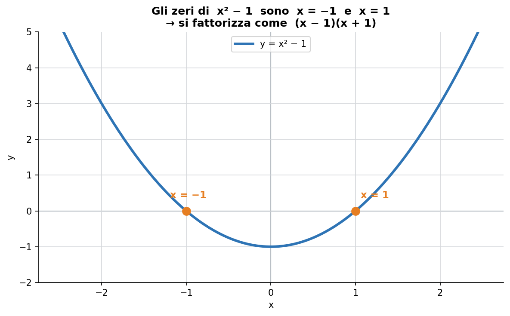
Passo 2 — spezzare e trovare A e B
Ogni fattore diventa il denominatore di una frazione semplice, con sopra un numero da trovare:
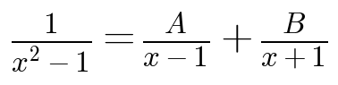
Si tolgono i denominatori (moltiplicando per il denominatore comune) e si ottiene 1 = A(x+1) + B(x-1). Poi il trucco dei valori furbi: si scelgono i valori di x che spengono un termine alla volta (x = 1 per trovare A, x = -1 per trovare B). Nel caso dell'esempio si ottiene A = 1/2 e B = -1/2.
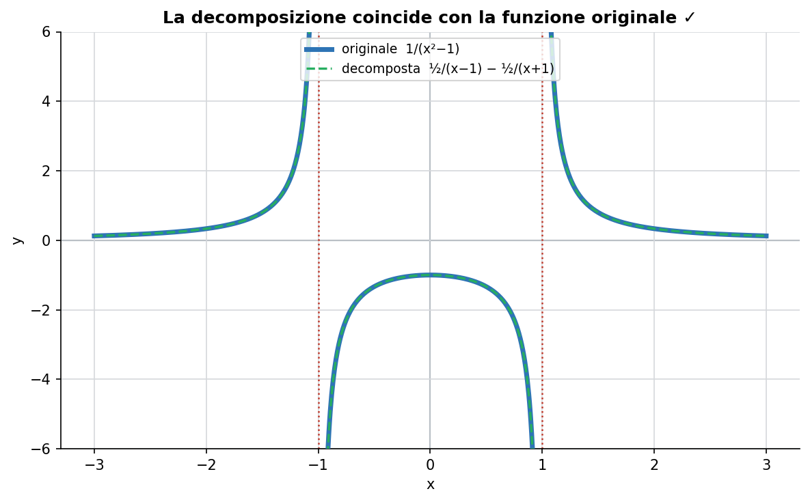
Passo 3 — integrare ogni pezzo come logaritmo
Ogni fratto semplice dà un logaritmo del fattore lineare (dentro il logaritmo va (x-1), non x² - 1):
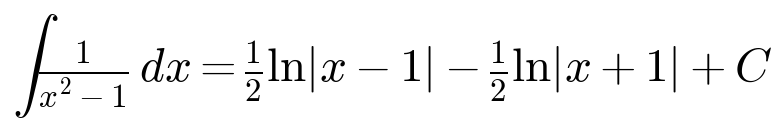
Il denominatore non è sempre una differenza di quadrati: a volte si fattorizza raccogliendo la x in comune, per esempio x² + 2x = x(x+2). Il metodo resta identico:
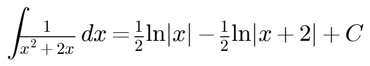
7. Errori da evitare (promemoria)
Negli integrali indefiniti scrivere sempre il +C: senza, la risposta è incompleta.
Nei fratti semplici va il fattore lineare dentro il logaritmo: ln|x-2|, non ln|x² - 4|.
I fratti hanno la x al denominatore: 1/x si integra come ln|x| (non integrare x, che darebbe x²/2).
Segni delle funzioni trigonometriche: il coseno integra in +seno, il seno integra in -coseno.
Nella sostituzione, alla fine risostituire sempre l'interno: nel risultato non deve restare la t.
Riepilogo della lezione
1. Che cos'è l'integrale
Integrare significa accumulare: sommare infiniti contributi piccolissimi. Geometricamente, l'integrale definito di f sull'intervallo [a, b] è l'area (con segno) compresa tra il grafico di f e l'asse x.
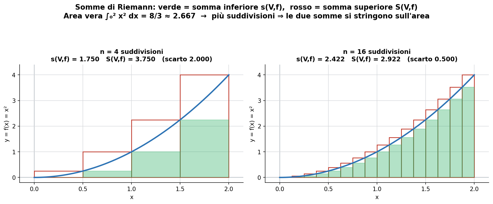
Costruzione di Riemann: si divide [a, b] con una partizione V e si stima l'area per difetto (somma inferiore) e per eccesso (somma superiore):
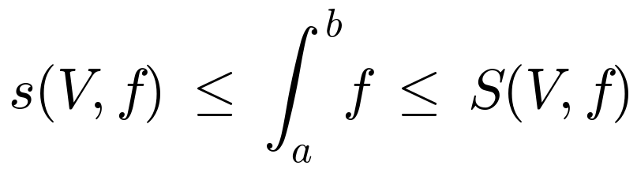
Infittendo le suddivisioni, le due somme si stringono sullo stesso valore. Quando coincidono, la funzione è integrabile:
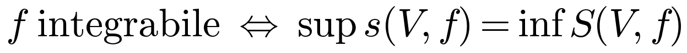
In pratica sono integrabili tutte le funzioni continue e tutte le funzioni monotòne su [a, b]: all'esame, quasi tutto.
2. Integrale con segno
Dove f è negativa, l'integrale conta in negativo. Quindi l'integrale è: (area sopra l'asse) − (area sotto l'asse). È diverso dall'area geometrica, che è sempre positiva. Per ottenere l'area geometrica: trova gli zeri di f, spezza l'integrale in quei punti e prendi il valore assoluto dei pezzi negativi.
3. Primitive e integrale indefinito
Una primitiva φ di f è una funzione tale che φ′ = f. L'integrale indefinito ∫ f dx è l'insieme di TUTTE le primitive, che differiscono per una costante: si scrive sempre con la + C.
4. Teorema fondamentale del calcolo
È il ponte fra derivata e integrale. Prima faccia: la funzione integrale ha per derivata la funzione di partenza.
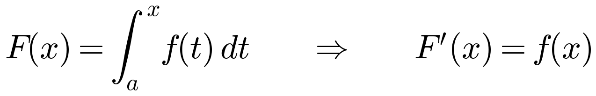
Seconda faccia (la formula per i conti): l'integrale definito si ottiene valutando una qualunque primitiva agli estremi.
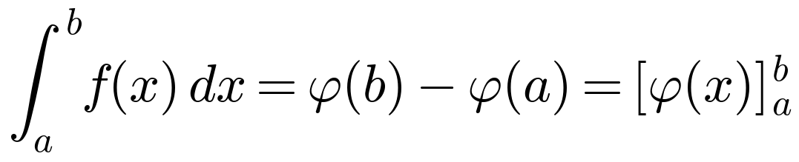
Regola d'oro: in un integrale definito sostituisci gli estremi e arriva al NUMERO. Nel risultato non deve restare la x.
5. Tavola delle primitive elementari
I cinque mattoni base, da sapere a memoria:
| funzione f(x) | una primitiva φ(x) |
|---|---|
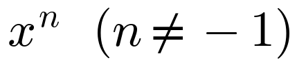 |
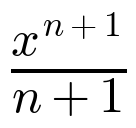 |
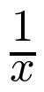 |
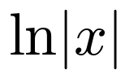 |
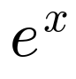 |
|
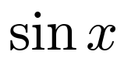 |
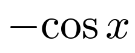 |
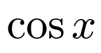 |
6. Integrazione per parti
Serve per integrare un prodotto di due funzioni. Nasce dalla regola di derivazione del prodotto:
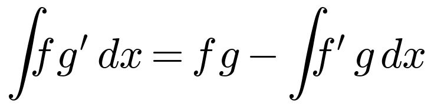
Strategia: come f (il fattore da derivare) scegli quello che si semplifica derivando — di solito la x, che diventa 1. Esempio:
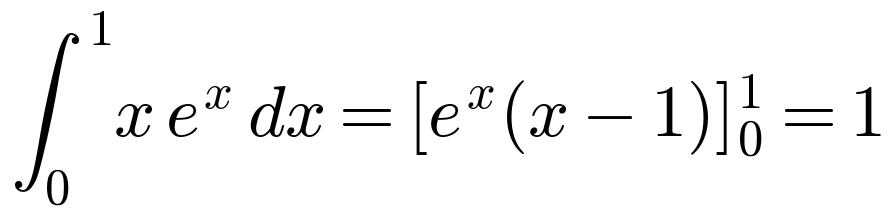
Verifica utile: per un integrale indefinito, deriva il risultato; se riottieni la funzione di partenza, è corretto.
7. Integrazione per sostituzione
Nasce dalla regola della catena, letta al contrario. Si dà un "soprannome" t alla parte interna, così l'integrale diventa uno che sai già fare:
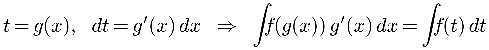
Ricetta in 5 passi:
Poni t = g(x), cioè la parte interna.
Deriva: dt = g′(x) dx.
Riscrivi tutto in funzione di t (non deve restare nessuna x).
Integra in t usando la tavola delle primitive.
Se è indefinito risostituisci la x; se è definito cambia gli estremi in valori di t.
Esempio:
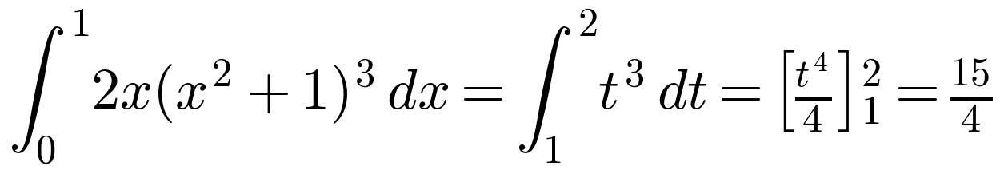
Attenzione all'ordine delle operazioni nel calcolare i nuovi estremi: la potenza si fa PRIMA della somma.
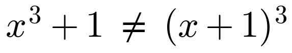
8. Errori da non ripetere
Arriva sempre al NUMERO: in un integrale definito la x deve sparire.
Doppia negazione: − (−cos x) = + cos x. Vale anche con i valori di sin e cos.
Le potenze si fanno prima delle somme: x³ + 1 ≠ (x + 1)³.
Integrale (con segno) ≠ area geometrica (sempre positiva).
Verifica gli integrali indefiniti derivando il risultato.